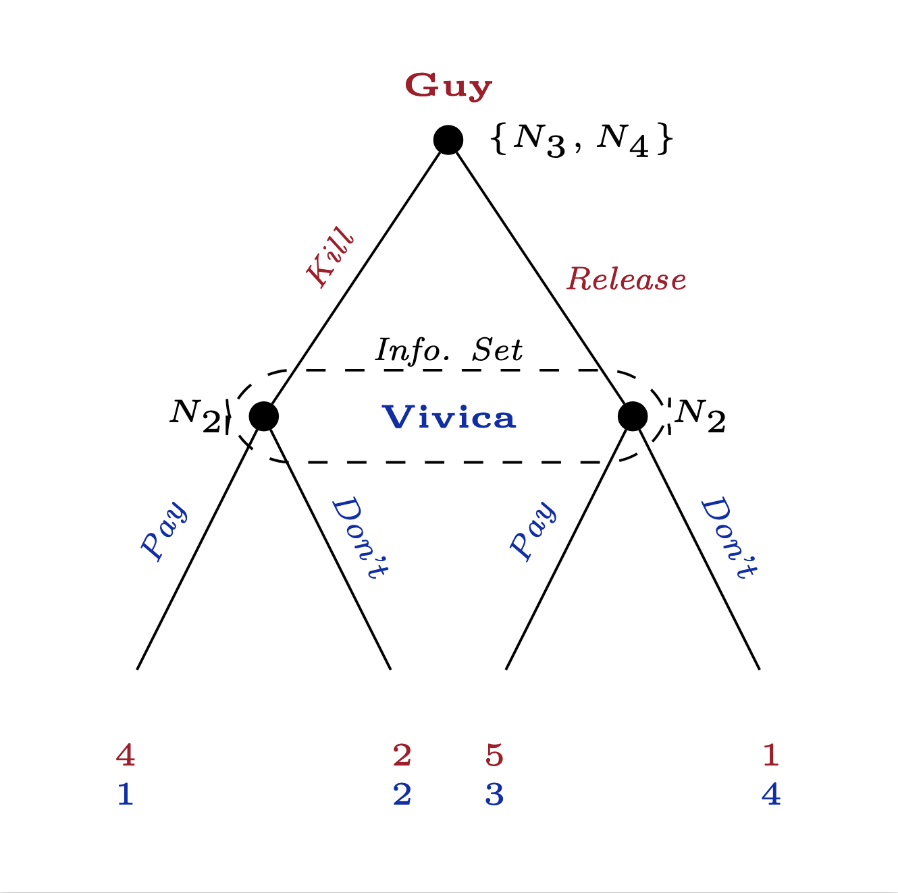
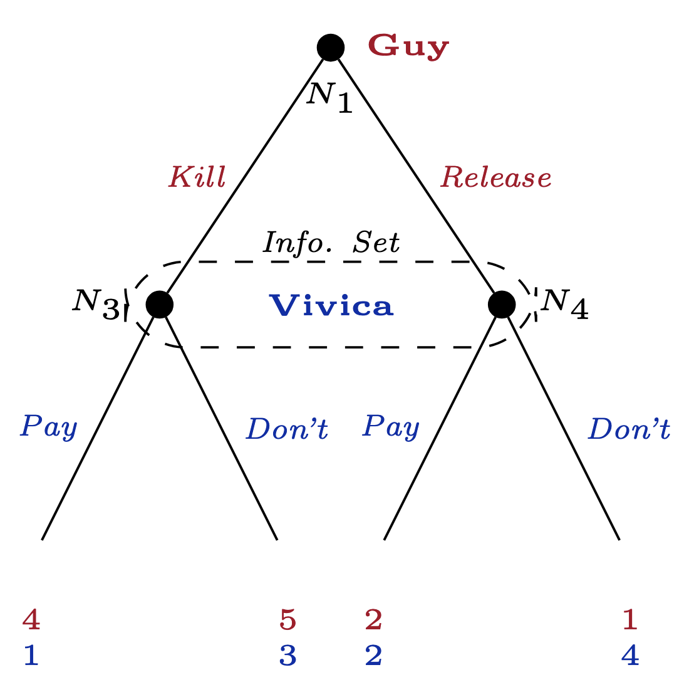

Introduction to Game Theory
Combining Sequential and Simultaneous Games
2025
Combining Sequential and Simultaneous
So far, games either: only sequential or only simultaneous.
But realistically, strategic interactions will contain both types.
Moving between forms helps for complicated games
- Introduces distinctions for information and beliefs
Sequential Games in Strategic Form
Original Kidnap Game

Rollback in the Kidnap Game
Rollback solution with perfect information:
- { (\(Kidnap, Release, Kill\)), \(Pay\) }
In other words:
Guy \(kidnaps\), promises to \(release\) if ransom paid, otherwise threatens \(kill\)
- rational if he believes Vivica will pay the ransom.
Vivica \(pays\)
- rational if she believes Guy’s threat/promise above
Is this the only stable outcome?
- It depends on beliefs!
Checking for Other Kidnap Game Nash, Guy
What are all of Guy’s possible strategies?
- Kidnap, Release if paid, Kill if unpaid
- Kidnap, R, R
- Kidnap, K, K
- Kidnap, K, R
- Don’t kidnap, Release, Kill
- DNK, R, R
- DNK, K, K
- DNK, K, R
Checking for Other Kidnap Nash, Vivica
What are all of Vivica’s strategies?
- Pay
- or Don’t pay
How to check for another Nash strategy profile besides
{ (\(Kidnap, Release, Kill\)), \(Pay\) }?
- Check all 16 possible strat. profiles?
- or use a tool we’ve learned to help?
A Strategic Form representation
| Guy, Vivica | Pay | Don’t Pay |
|---|---|---|
| DNK, Kill, Kill | 3, 5 | 3, 5 |
| DNK, Kill, Release | 3, 5 | 3, 5 |
| DNK, Release, Kill | 3, 5 | 3, 5 |
| DNK, Release, Release | 3, 5 | 3, 5 |
| Kidnap, Kill, Kill | 4, 1 | 2, 2 |
| Kidnap, Kill, Release | 4, 1 | 1, 4 |
| Kidnap, Release, Kill | 5, 3 | 2, 2 |
| Kidnap, Release, Release | 5, 3 | 1, 4 |
New look, same game
| Guy, Vivica | Pay | Don’t Pay |
|---|---|---|
| DNK, Kill, Kill | 3, 5 | 3, 5 |
| DNK, Kill, Release | 3, 5 | 3, 5 |
| DNK, Release, Kill | 3, 5 | 3, 5 |
| DNK, Release, Release | 3, 5 | 3, 5 |
| Kidnap, Kill, Kill | 4, 1 | 2, 2 |
| Kidnap, Kill, Release | 4, 1 | 1, 4 |
| Kidnap, Release, Kill | 5, 3 | 2, 2 |
| Kidnap, Release, Release | 5, 3 | 1, 4 |
Solving Kidnap in Strategic Form
- The top half of the table represents don’t kidnap branch
- Why does it take up multiple cells?
- They represent different beliefs
- Why might Guy choose to not kidnap?
- If he believes Vivica won’t pay
- Why does it take up multiple cells?
Guy’s BR in Strategic Form
| Guy, Vivica | Pay | Don’t Pay |
|---|---|---|
| DNK, K, K | 3, 5 | 3, 5 |
| DNK, K, R | 3, 5 | 3, 5 |
| DNK, R, K | 3, 5 | 3, 5 |
| DNK, R, R | 3, 5 | 3, 5 |
| Kidnap, K, K | 4, 1 | 2, 2 |
| Kidnap, K, R | 4, 1 | 1, 4 |
| Kidnap, R, K | 5, 3 | 2, 2 |
| Kidnap, R, R | 5, 3 | 1, 4 |
Vivica’s BRs in Strategic Form
When would Vivica choose to not pay the ransom?
| Guy, Vivica | Pay | Don’t Pay |
|---|---|---|
| DNK, K, K | 3, 5 | 3, 5 |
| DNK, K, R | 3, 5 | 3, 5 |
| DNK, R, K | 3, 5 | 3, 5 |
| DNK, R, R | 3, 5 | 3, 5 |
| Kidnap, K, K | 4, 1 | 2, 2 |
| Kidnap, K, R | 4, 1 | 1, 4 |
| Kidnap, R, K | 5, 3 | 2, 2 |
| Kidnap, R, R | 5, 3 | 1, 4 |
New Nash Eq. in Kidnap Game
We found { (\(Kidnap, Release, Kill\)), \(Pay\) }
through backwards induction.
Through BR analysis in Strategic form:
- Any strategy profile where:
- Guy Doesn’t Kidnap (DNK,K,K; DNK,K,R; DNK,R,K; DNK,R,R)
- Vivica Doesn’t Pay
- is also a Nash
The rollback eq. is not the only NE of this game!
NE vs SPNE
What is different about rollback eq. and other Nash?
- Backwards induction rules out threats that aren’t credible
Vivica could threaten to not pay ransom
If Guy believes this, he would get 2 or 1 by Kidnapping,
- or 3 by not kidnapping
Don’t kidnap, Don’t pay NE are stable
- given certain beliefs
But if Guy’s really savvy,
He should rationally state his preference of killing if paid, release if unpaid
he should know Vivica wouldn’t follow through once really faced with decision of 3 vs 2
Vivica’s threat of “I won’t pay” isn’t credible
- It’s not subgame rational
Rollback in the Kidnap Game
{ (\(Kidnap, Kill_3, Release_4\)), \(Pay\) }
On top of being a regular NE, this strategy profile is also called subgame-perfect because both players’ actions are credible:
- Guy’s threat of killing Orlando if the ransom goes unpaid aligns with his preference
- His promise to release Orlando if the ransom is paid is also credible because he would rather not kill if he gets the money
- Vivica has every reason to pay the ransom when she believes guy will make good on his threat because she doesn’t want Orlando to die
Simultaneous Games in Sequential Form
Illustrating Sim. Games using Trees
Martina Navratilova v. Chris Evert
| Evert, Navratilova | DL | CC |
|---|---|---|
| DL | 50, 50 | 80, 20 |
| CC | 90, 10 | 20, 80 |
Navratilova has volleyed the ball to Evert
Evert can send the ball down the line, DL, or crosscourt CC (a softer diagonal shot)
Navratilova has to simultaneously choose to set up to receive either type of shot
Illustrating Sim. Games using Trees
The simultaneous tennis game can also be represented as a tree

The information set indicates that Navratilova doesn’t know which shot before she has to choose how to receive
Adding Nature as a player
Even in cases which aren’t actually strategic, we can still use some of these tools
Changing the order of Moves
We found the NE will be (Deficit, High Rates) when this game is played simultaneously
| Congress, Federal Reserve | Low rates | High Rates |
|---|---|---|
| Balance | 3, 4 | 1, 3 |
| Deficit | 4, 1 | 2, 2 |
Changing the order of Moves
What about when the Fed moves first?
- We get the same NE
Changing the order of Moves
What about when Congress moves first?
now we get a different NE with congress playing their strictly dominated strategy
this is because when the Fed acts second, they can make a credible threat
Showing Seq. Games in Strategic Form
In the game where Congress moves first, they have two strategies, but the Fed has 4
| Congress, Fed | L if B, H if D | H if B, L if D | always Low | always H |
|---|---|---|---|---|
| Balance | 3,4 | 1,3 | 3,4 | 1,3 |
| Deficit | 2,2 | 4,1 | 4,1 | 2,2 |
Showing Seq. Games in Strategic Form
When we implemented rollback on the extensive form version, there was only one NE,
but here there are two:
{Deficit, always High }
{ Balance, (L if B, H if D) }
Both are NE of this game, but the second is a special type of NE
A subgame-perfect Nash equilibrium because it involves the Fed making their rational choice in every subgame.
Showing Seq. Games in Strategic Form
It’s not subgame-rational for the Fed to play High always because if the case where Congress already spent in deficit were to happen, the Fed’s only rational action would be to set low interest rates.
- We can say that the Fed’s High always strategy is not a credible promise
SPNE
The rollback method finds the subgame-perfect Nash equilibria of sequential games
- A complete plan of action such that at every node including off-equilibrium paths, it is still rational to stick to that original plan of action.
Games with both Simultaneous and Sequential Moves
Games with both types of moves
We separated games by the timing of moves in the first few lectures
it allowed us to introduce the relevant methods for each category
it also gave us the intuition behind the more general concept of Nash Equilibrium in a few different settings
but for many types of settings there are a mix of actions that are taken both sequentially and also taken simultaneously
Two-Stage Games & Subgames
CrossTalk and GlobalDialog are competing telecom companies
- Each could invest $10 billion in fiber-optic infrastructure
If only one company has fiber-optic, they get the entire market
A monopolist can charge high price \(\rightarrow\) earn $24 billion
or a low price to attract more customers \(\rightarrow\) earn $16 billion
Two-Stage Games & Subgames
CrossTalk and GlobalDialog are competing telecom companies
- Each could invest $10 billion in fiber-optic infrastructure
If both companies invest, they are locked in a simultaneous pricing game
If both set high price in the fiber-optic market, each gets $12 billion
If both choose low, they each get $8 billion
If one sets high and the other sets low,
the low-price setter gets the whole market and earns $24 billion,
the high price setter gets $0
Two-Stage Games & Subgames
Two-Stage Games & Subgames
We can use our tools from solving both game trees and game tables
first, notice that a monopolist will always set a High price
So we can replace the payoffs from the High branch into the first-stage table
Two-Stage Games & Subgames
Take a look at the table labelled Second stage:
| CrossTalk, GlobalDialog | High | Low |
|---|---|---|
| High | 2, 2 | -10, 6 |
| Low | 6, -10 | -2, -2 |
This is itself a complete game nested in the larger one
so it’s whats is called a subgame
we can solve it like we would any other game table
The NE of this subgame is (Low, Low)
place the Nash payoffs of -2, -2 into the first-stage table
Two-Stage Games & Subgames
First-stage game with payoffs filled in:
| CrossTalk, GlobalDialog | Don’t | Invest |
|---|---|---|
| Don’t | 0, 0 | 0, 14 |
| Invest | 14, 0 | -2, -2 |
Now we can solve for the NE of the whole game:
(Invest High Low, Don’t High Low)
(Don’t High Low, Invest High Low)
Kidnapping with hidden information
When we first saw this game, Guy could observe whether Vivica had paid the ransom before he made the decision to \(Kill\) or \(Release\) Orlando
Now we will consider a variation of this game where Guy doesnt know whether Vivica has paid when he chooses to Kill or Release
Kidnap Game with a simultaneous subgame
The dotted box around Guy’s nodes \(N_3\) and \(N_4\) indicate that he can’t tell them apart.
They are part of the same information set; to Guy, they are indistinguishable from each other.
Information set
is the set of information available to a player when making a decision. In the extensive form, every decision node belongs to one and only one info set, but multiple nodes may be in the same info set if the player at that node cannot tell them apart.
Using Strategic Form in Extensive Games
Consider the situation when Guy has already kidnapped Orlando.
List the remaining strategies for each player:
Vivica can decide to Pay or Don’t pay the ransom
Guy can either Kill or Release Orlando
Using Strategic Form in Extensive Games
With these strategy profiles, we can write this subgame out in its strategic form:
| Guy, Vivica | Pay | Don’t |
|---|---|---|
| Kill | 4, 1 | 2, 2 |
| Release | 5, 3 | 1, 4 |
Going from Strategic to Extensive
For every strategic form game, there are multiple extensive form game trees which can be drawn.


Another way to represent the entire Kidnap Game
Solving the Kidnap Game w/ Simultaneous Sugame
What will a complete strategy profile look like for each player?
- Guy’s strategy:
- element 1: \(Kidnap\) or \(Don't~Kidnap\)
- element 2: \(Kill\) or \(Release\)
- Vivica’s strategy:
- element 1: \(Pay\) or \(Don't\)
Solving the Kidnap Game w/ Simultaneous Sugame
What is/are the NE of the subgame?
| \(Pay\) | \(Don't\) | |
|---|---|---|
| \(Kill\) | 4,1 | 2,2 |
| \(Release\) | 5,3 | 1,4 |
(\(Release\), \(Pay\)) is no longer stable because Vivica wouldn’t pay the ransom if Guy releases
(\(Kill\), \(Don't\)) is the only NE in this table
Solving the Kidnap Game w/ Simultaneous Sugame
Knowing this, what is the NE in the full game?
- { (\(Don't~Kidnap\), \(Kill\)), \(Don't~pay\) }
Comparing NE in the different Kidnapping Games
In the version where Vivica’s action was observable, we found the NE:
- { (\(Kidnap, Kill_3, Release_4\)), \(Pay\) }
But in the version where Guy couldn’t see whether Vivica paid the ransom, it was:
- { (\(Don't~Kidnap\), \(Kill\)), \(Don't~pay\) }
- If you were Guy, which version would you prefer?
- Guy’s advantage is in making a conditional promise/threat to Vivica which is taken away if he can only pick one action

EC327 | Lecture 5 | Combining Games